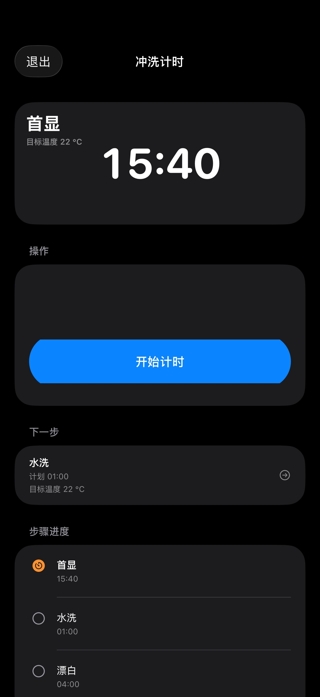
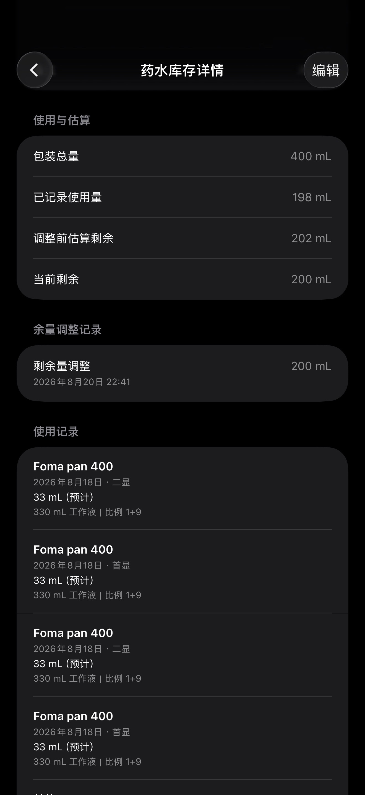
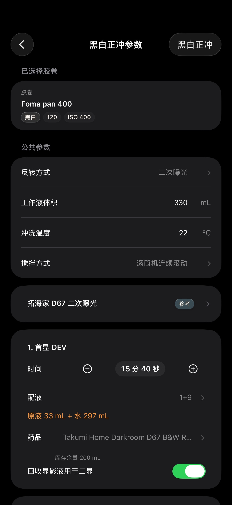
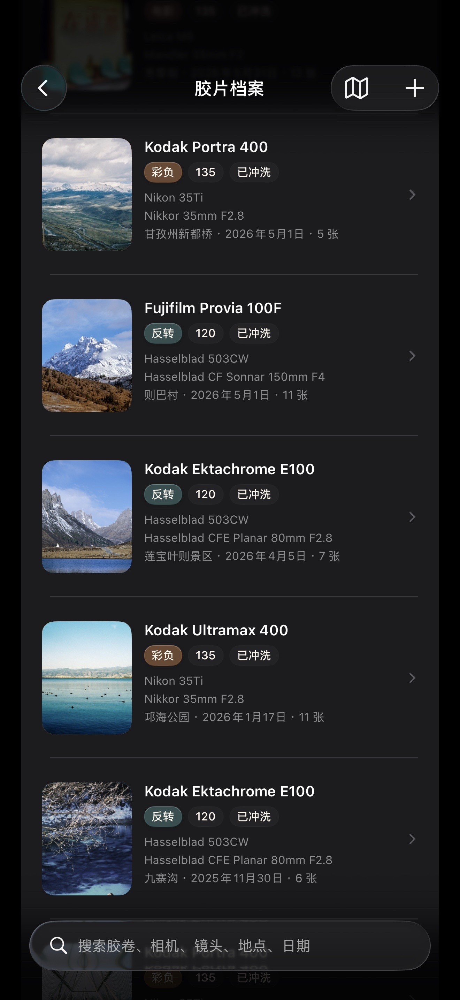

把一卷胶片，从装片到成片
完整地留下来。
一卷 Rollbook 管理胶片拍摄的完整流程：装片、拍摄、冲洗、成片到回看，每一卷都在同一份档案里，而不是散落在几个不同的地方。
真正花力气的是冲洗与药水这一段——黑白负片、黑白反转、C-41、E-6、ECN-2 五种工艺各有自己的步骤序列、分步计时与提醒；配方记录到每一步的时间、温度、稀释比与 EI；药水按具体批次扣减用量，随时能看到估算剩余。
One roll, from loading
to the finished frame.
Rollbook manages the full lifecycle of a roll of film — loading, shooting, processing, finished frames and later review — kept in one archive instead of scattered across separate places.
The depth is in the processing and chemical side: B&W negative, B&W reversal, C-41, E-6 and ECN-2 each have their own step sequence, per-step timing and alerts; recipes carry time, temperature, dilution ratio and EI for every step; and chemical consumption is deducted from the specific batch you used, with an estimated remaining volume.
功能Features
档案、冲洗、配方、药水与成片，串成同一条记录。Archive, processing, recipes, chemicals and finished frames — one connected record.
五种工艺，逐步计时Five chemistries, per-step timing
黑白负片、黑白反转、C-41、E-6、ECN-2 各有独立的步骤序列。反转工艺区分首显、漂白、清除浴、化学反转与二显，每一步带自己的时间、温度、稀释比与搅动方式。计时结束前逐秒提示，支持系统闹钟与本地通知双路提醒。
Each chemistry has its own step sequence, not a generic countdown. Reversal, for example, treats first developer, bleach, clearing bath, chemical reversal and second developer as separate steps with their own duration, temperature, dilution and agitation. Alerts count down the final seconds, using both system alarms and local notifications.
配方细到每一步Recipes down to each step
配方记录每一步的时间、温度、稀释比、EI 与增减感，分为原厂说明书配方、参考配方与自建配方三档来源，标注清楚哪些来自厂商资料、哪些是你自己的经验。
Recipes store time, temperature, dilution, EI and push/pull for every step, separated into manufacturer datasheet recipes, reference recipes and your own — so it is always clear which numbers come from the maker and which are yours.
按批次扣减，剩多少心里有数Per-batch consumption ledger
每一瓶药水单独建档：包装容量、购入日期、开封日期、有效期与状态。每次冲洗按实际使用的那一批扣减用量，形成使用流水与估算剩余；估算不准时可以手动校准，校准也留痕。
Every chemical batch is tracked individually — package size, purchase date, opened date, expiration and lifecycle state. Each session deducts from the specific batch used, producing a usage ledger and an estimated remaining volume, with manual calibration recorded as its own entry.
一卷的完整前后The whole life of one roll
胶卷、相机、镜头、拍摄信息、冲洗过程、成片与评价，归在同一份档案里。支持 135、120，以及 4×5 与 8×10 页片。
Film, camera, lens, shooting details, the processing session, the resulting photographs and your notes all live in one archive. 135, 120, 4x5 and 8x10 sheet film are supported.
成片归位，回看有线索Frames back where they belong
扫描或翻拍的成片导入对应档案，设置封面、记录备注与评价；档案地图按地点回看自己的影像记录，一卷片刻按日整理值得重看的片段。
Scans and camera-scanned frames import into their archive, with covers, notes and ratings. An archive map revisits your work by place, and a daily "Moments" view surfaces things worth looking at again.
数据在你自己手里Your data stays yours
无需注册账号，不含广告与用户追踪。数据以本地保存为主，可导出完整备份文件自行保管；也可以选择开启 iCloud 备份，存放在你自己的 iCloud 私有区域。隐私档案通过设备身份验证限制访问。
No account, no ads, no tracking. Data is stored locally and can be exported as a complete backup file you keep yourself. You may optionally enable an iCloud archive, stored in your own private iCloud container. Private archives are gated behind device authentication.
界面Screens
以下为一卷当前版本的核心界面。Core screens from the current version of Rollbook.




常见问题FAQ
没有找到答案，欢迎直接来信。Not covered here? Just write to us.
支持哪些冲洗工艺？Which chemistries are supported?
黑白负片、黑白反转、C-41、E-6、ECN-2 五种。每种工艺有各自的标准步骤序列，不是同一个计时器换个名字。反转工艺会区分首显与二显、漂白、清除浴与化学反转等独立步骤。
Five: B&W negative, B&W reversal, C-41, E-6 and ECN-2. Each has its own standard step sequence rather than a single renamed timer. Reversal distinguishes first and second developer, bleach, clearing bath and chemical reversal as separate steps.
计时提醒在锁屏或后台会响吗？Do alerts fire when the screen is locked?
会。一卷同时使用系统闹钟与本地通知两条提醒路径，步骤结束前会逐秒提示。请在系统设置里允许通知与提醒，否则只能靠 App 在前台时的声音。
Yes. Rollbook uses both system alarms and local notifications, and counts down the final seconds before a step ends. Please allow notifications and alerts in system settings; otherwise reminders only sound while the app is in the foreground.
药水的估算剩余是怎么算的？How is estimated remaining volume calculated?
估算剩余 = 包装总量 − 已记录的用量 − 手动校准的消耗量。用量来自每次冲洗按批次扣减的流水，配方能算出用量时自动填写，也可以自己改成实际用量。
如果某个库存项没有填写包装容量，或者单位无法换算，就不会显示估算剩余——一卷不会用猜测填补空白。
Estimated remaining = package total − recorded usage − manual calibration. Usage comes from the per-batch ledger written by each processing session; it is filled automatically where the recipe allows it to be calculated, and can be corrected to the actual amount.
If a stock item has no package volume recorded, or its unit cannot be converted, no estimate is shown — Rollbook will not fill the gap with a guess.
配方从哪里来？可以自己建吗？Where do recipes come from? Can I add my own?
配方分三档来源：原厂说明书配方、参考配方、以及你自建的配方。内置资料整理自厂商公开说明书，界面上会标注来源。你可以随时新建自己的配方，系统预置资料不会被改动。
Recipes come in three tiers: manufacturer datasheet recipes, reference recipes and your own. Bundled data is compiled from published manufacturer documentation and its source is labelled in the app. You can create your own recipes at any time; bundled reference data is never modified.
怎么备份和恢复？How do backup and restore work?
一卷可以导出一份完整备份文件（含结构化数据与原图），保存到你自己选定的位置，之后可以从这个文件完整恢复。此外可以选择开启 iCloud 备份，数据存放在你自己的 iCloud 私有区域。两种方式都不经过我们的服务器。
Rollbook exports a complete backup file including structured data and original photographs, saved wherever you choose, and can restore fully from that file. You may also enable an optional iCloud archive stored in your own private iCloud container. Neither path passes through our servers.
隐私档案是什么？What are private archives?
可以把某些档案标记为隐私档案，访问前需要通过设备身份验证（Face ID / Touch ID / 密码）。隐私档案不会出现在普通浏览与统计中。
Selected archives can be marked private and require device authentication (Face ID / Touch ID / passcode) before they can be opened. Private archives do not appear in ordinary browsing or statistics.
支持哪些画幅？Which formats are supported?
135、120，以及 4×5 与 8×10 页片。
135, 120, and 4x5 / 8x10 sheet film.
需要注册账号吗？收费吗？Do I need an account?
不需要注册账号，打开就能用。App 内不含广告与用户追踪。
No account is required — the app works as soon as you open it. There are no ads and no tracking.
隐私政策Privacy Policy
最后更新：2026 年 8 月Last updated: August 2026
一卷 Rollbook（以下简称"一卷"）不会将你的个人信息上传至开发者运营的服务器，也不会出售你的个人信息。本页说明一卷如何处理数据。
我们不收集什么
- 一卷不要求注册账号，不收集姓名、邮箱、手机号等身份信息。
- 一卷不含广告 SDK，不含第三方分析或用户追踪。
- 一卷不申请设备定位权限，不会追踪你的位置。
- 一卷不申请读取你的整个照片库。导入照片时通过系统照片选择器进行，你选中的照片才会被读取。
数据存放在哪里
你在一卷中创建的所有内容——胶片档案、冲洗记录、配方、器材与药水库存、导入的照片——默认保存在你自己的设备上。我们没有服务器，也无法访问这些数据。
如果你主动开启 iCloud 备份，数据会存放在你自己 Apple 账户下的 iCloud 私有区域，由 Apple 的隐私机制保护。我们同样无法访问。
你可以随时导出一份完整备份文件，自行保管或转移到其他设备。
一卷申请的系统权限
- 提醒与闹钟：用于在冲洗步骤结束时提醒你，直到你手动停止提醒。
- Face ID / Touch ID：仅用于在打开隐私档案前验证是否为设备持有者。验证在设备本机完成，我们不接触任何生物特征数据。
- 写入照片库：仅在你主动导出照片时，用于把副本保存到你的照片库。
以上权限均可拒绝；拒绝后相应功能不可用，其余功能不受影响。
关于地点信息
如果你为某份档案填写或在地图上选择了地点，或导入的照片自带位置信息，这些内容会与档案一起保存在本地，用于档案地图等回看功能。一卷不会主动获取你的实时位置，也不会把地点信息发送到任何地方。
儿童
一卷不面向 13 岁以下儿童，也不会有意收集儿童的个人信息。
变更
本政策如有更新，会在本页发布并更新日期。
联系
如对隐私有任何疑问，请来信 slowscopy@gmail.com。
一卷 Rollbook ("Rollbook") does not upload your personal information to developer-operated servers or sell your personal information. This page explains how Rollbook handles data.
What we do not collect
- Rollbook requires no account and collects no name, email address or phone number.
- Rollbook contains no advertising SDK, no third-party analytics and no user tracking.
- Rollbook does not request device location permission and does not track your whereabouts.
- Rollbook does not request read access to your photo library. Photos are imported through the system photo picker, so only the images you choose are read.
Where your data lives
Everything you create in Rollbook — archives, processing records, recipes, gear and chemical inventory, imported photographs — is stored on your own device by default. We operate no servers and cannot access this data.
If you choose to enable the iCloud archive, data is stored in your own private iCloud container under your Apple Account, protected by Apple's privacy mechanisms. We cannot access it either.
You can export a complete backup file at any time and keep or move it yourself.
System permissions Rollbook requests
- Alerts and alarms — to remind you when a processing step ends, until you stop the reminder.
- Face ID / Touch ID — only to verify the device owner before opening a private archive. Verification happens on-device; we never handle biometric data.
- Add to photo library — only when you export photographs, to save copies into your library.
All of these can be declined; the related feature becomes unavailable while everything else continues to work.
Location information
If you enter or select a place for an archive, or an imported photograph carries location metadata, that information is stored locally with the archive and used for features such as the archive map. Rollbook does not request your live location and does not transmit place information anywhere.
Children
Rollbook is not directed at children under 13 and does not knowingly collect personal information from children.
Changes
Any update to this policy will be posted on this page with a revised date.
Contact
For any privacy question, write to slowscopy@gmail.com.
更新记录Release Notes
每次发布都会记在这里。Every release is recorded here.
- 五种冲洗工艺（黑白负片、黑白反转、C-41、E-6、ECN-2）的分步计时与提醒
- 配方管理：分步时间、温度、稀释比、EI，三档来源分区
- 药水库存与按批次消耗扣减，支持手动校准
- 胶片档案、成片导入与照片管理、档案地图
- 一卷片刻：按日整理值得重看的记录
- 4×5 与 8×10 页片支持
- 隐私档案、完整本地备份导出与恢复、可选 iCloud 备份
- 中英双语
- Per-step timing and alerts for five chemistries (B&W negative, B&W reversal, C-41, E-6, ECN-2)
- Recipe management: per-step time, temperature, dilution and EI, in three source tiers
- Chemical inventory with per-batch consumption deduction and manual calibration
- Roll archives, photo import and management, archive map
- Moments: a daily view of records worth revisiting
- 4x5 and 8x10 sheet film support
- Private archives, full local backup export and restore, optional iCloud archive
- Chinese and English
联系Contact
使用中遇到问题、发现错误，或者对某个工艺、配方、药品资料有补充，都欢迎来信。开发者本人回信。
Questions, bug reports, or corrections to a process, recipe or chemical entry are all welcome. Mail is answered by the developer.